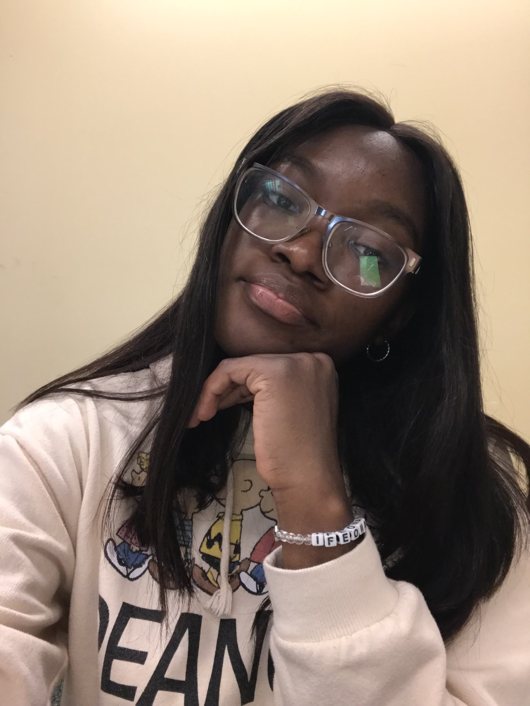

Hey there! My name is Ogbu Janet Ifeoma. I’m majoring in User Experience and Interaction Design at Drexel university. I chose this field not just because I enjoy designing, but because I’m fascinated by human behavior– what makes people click, stay, smile, or even get frustrated when using a product. There’s something incredibly rewarding about turning everyday problems into smooth, beautiful experiences that feel almost invisible in their simplicity. I believe my ability to empathize and put myself in others’ shoes is a valuable skill — one that keeps user satisfaction at the heart of everything I create.
I’m not just a designer; I’m also a visual artist, so creativity runs in everything I do– from painting bold ideas to crafting interfaces that actually connect with people. I don’t just design for screens– I design for how people feel.